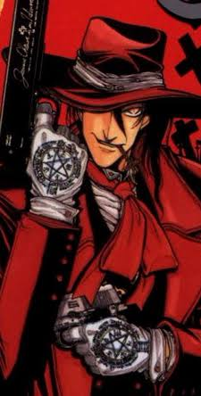

e o protagonista da serie Hellsing, revelado como o proprio Conde Dracula transformado em servo leal apos ser derrotado por Abraham Van Helsing. Ele e o vampiro mais poderoso existente, atuando como a principal arma da Organizacao Hellsing na caca a monstros e forcas sobrenaturais